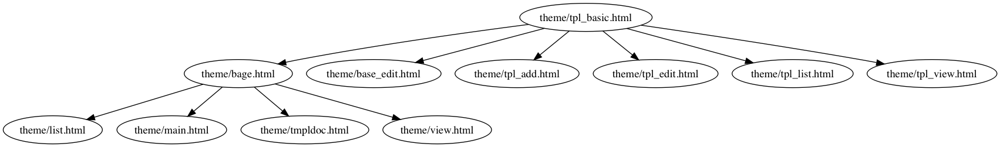

TorCMS Introduction
Status

- Checking torcms with pylint using default configuration, gets score greater than 8.5 (pylint torcms).
Introduction
Flexible, extensible web CMS framework built on Tornado and Peewee, compatible with Python 3.4 and above. Using PostgreSQL with JSON extension as the database.
The CMS was desinged as the container for GIS showing as the very beginning. It has the basic map showing, map overlaying, GIS data editing funtion now. And, the CMS could used to publish different kind the information, such as basic HTML page, JavaScript app, maps, multimedias.
pypi: The kernel of this CMS has been submit to pypi. https://pypi.python.org/pypi/torcms . Could be installed via:
pip install torcms
Features
- Build on Tornado, only with Web features, with made it is simple to use.
- Markdown editor, make your HTML clean and clear.
- Carefull desinged model for conents. Post, Info, Page, Wiki as default.
- User roles for editing.
- Full text search with Whoosh.
- PostgreSQL 9.4 above, with JSONB, which makes the framework extensible.
- Access database via Peewee.
- SASS sub-project for Style.
- Last version of Jquery. And, Bootstrap as the default CSS framework.
Application
- http://geodata.osgeo.cn/ (The default theme, and DEMO. )
- http://www.osgeo.cn
- http://www.maplet.org
- http://www.yunsuan.org
- http://drr.osgeo.cn
Install
Pull the codes.
git clone https://github.com/bukun/TorCMS.git
Under Debian
aptitude install postgresql-server-dev-all aptitude install postgresql-contrib aptitude install redis-server
Create the Database
Create the database, and user in PostgreSQL. The information should be used in the config.py file. And, create hstore extension in the database.
CREATE USER torcms WITH PASSWORD '131322'; CREATE DATABASE torcms OWNER torcms; GRANT ALL PRIVILEGES ON DATABASE torcms to torcms; \c torcms create extension hstore;
For Python
You should be under Python 3.4 or Python 3.5.
Install libs for Python 3.4 or 3.5,
cd TorCMS pip install -r doc/requirements.txt
How to Run
Get the HTML for modules
# cd TorCMS git clone https://github.com/bukun/torcms_modules_bootstrap.git templates/modules
Edit the configiure.
# cd TorCMS/ copy cfg_demo.py cfg.py
And, edit the config.py file.
DB_CFG = {
'db': 'torcms',
'user': 'torcms',
'pass': '111111',
}
SMTP_CFG = {
'name': 'TorCMS',
'host': "smtp.ym.163.com",
'user': "admin@yunsuan.org",
'pass': "",
'postfix': 'yunsuan.org',
}
SITE_CFG = {
'site_url': 'http://127.0.0.1:8888',
'cookie_secret': '123456',
'DEBUG': False
}
The DB_CFG defines the items used for PostgreSQL.
Modify the meta information of the web application.
Modify the file in TorCMS/database/meta.
- doc_catalog.yaml , which define the catalog of post.
- info_tags.xlsx , which define the catalog of info.
Initialization
python helper.py -i init
it will
- fetch the F2E libraries.
- initialize the PostgreSQL schema.
- initialize the metadata in database.
- the whoosh database would be initialized.
Run
Run the web application,
python server.py 8088
Open web brower and navigate to http://127.0.0.1:8088 .
The port should as be defined in config.py .
Enjoy it!
Helper Script
There are some helper scripts used in the programe.
Run the following command to list the different scripts:
python helper.py -h
Run the scripts with the -i switcher, we have used init to do something for initialization.
- migrate : for database schema change.
- edit_diff : send email for modification of the posts and pages.
- sitemap : would generate the sitemap for posts and pages.
- check_kind : to check if the kind of post is right.
- check : generate the picture for the relationship of templates. For example:
python helper.py -i check templates/theme
would generate the following picture:
Unit Tests
First you should install nose with pip,
pip install nose
then run as follow:
nosetests -v -d --exe tester
with coverage (install with: pip install coverage ):
nosetests --exe -v -d --with-coverage tester
Note: I alway writing code in the folder which is mounted by Debian in VirtualBox, so --exe.
Build the API documents
under TorCMS
sphinx-apidoc -F -o api_doc torcms
Editing api_doc/conf.py. Add the following line after import os.
sys.path.insert(0, os.path.abspath('../'))
That's OK. then generate the HTML documents. Under TorCMS:
sphinx-build -b html api_doc api_html
In Chinese
本 CMS 是使用Python 3.4，Tornado Web框架， Peewee，开发的。 此CMS系统原本用于云算笔记、开放地理空间实验室（现合并到OSGeo中国中心）等网站， 后来慢慢将 CMS 从中抽取出来。
在网站设计方面，提出了文档（Post）、信息（Infor）两种对等的模型进行信息的组织。 这两种模型结构相似，分别用与网站的内容管理，以及应用管理。 其中应用管理，使用了PostgreSQL的JSON扩展，可以设计为App、分类信息、商城应用等。 这些可以在下面的应用中看一下。
网站的文档，除了Post之外，还有Page、Wiki，针对不同的目的作为文档使用。
应用
- http://geodata.osgeo.cn/ (The default theme, and DEMO. )
- http://www.osgeo.cn
- http://www.maplet.org
- http://www.yunsuan.org
- http://drr.osgeo.cn